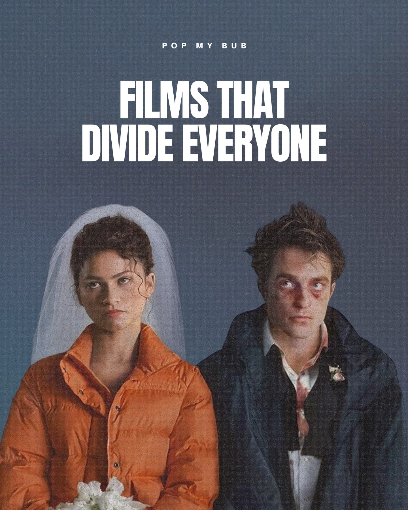
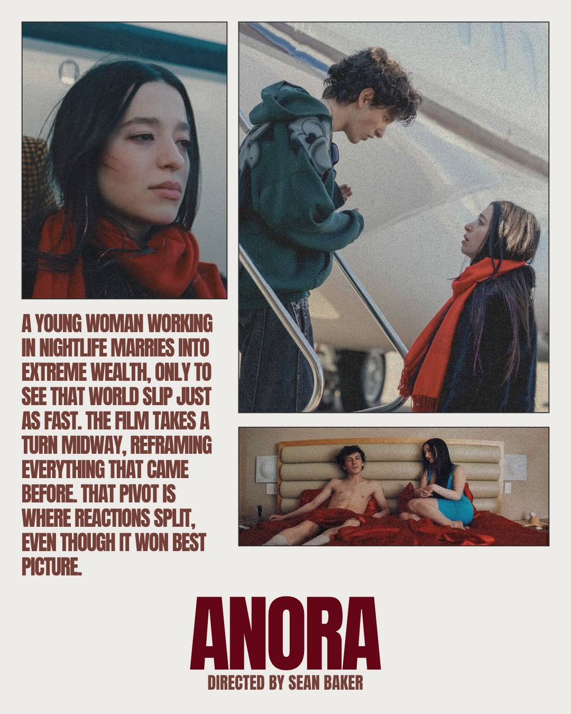
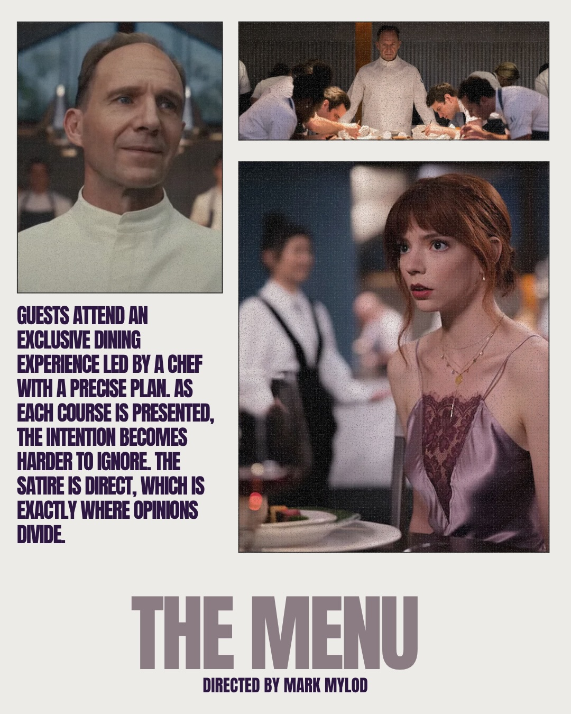
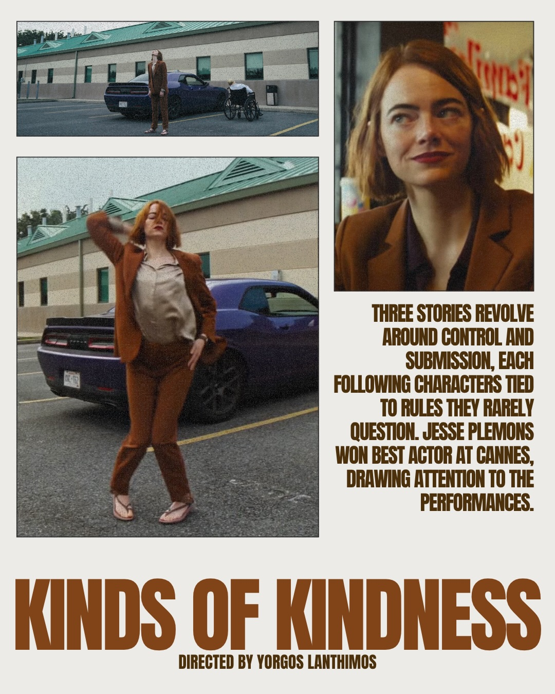
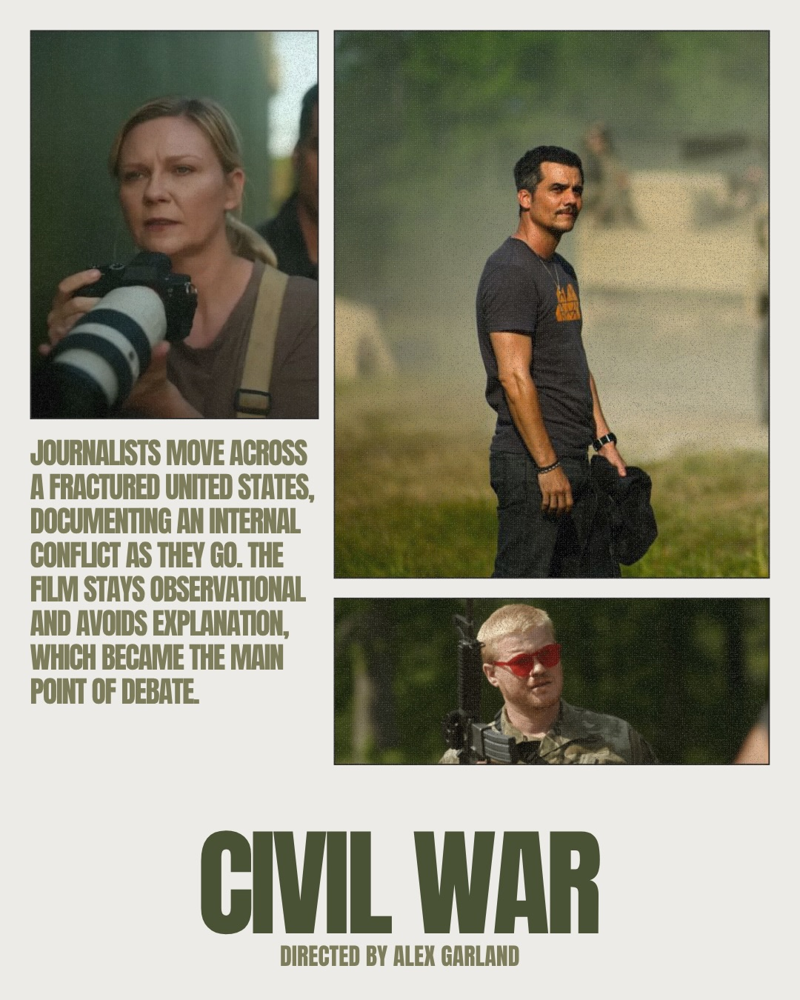
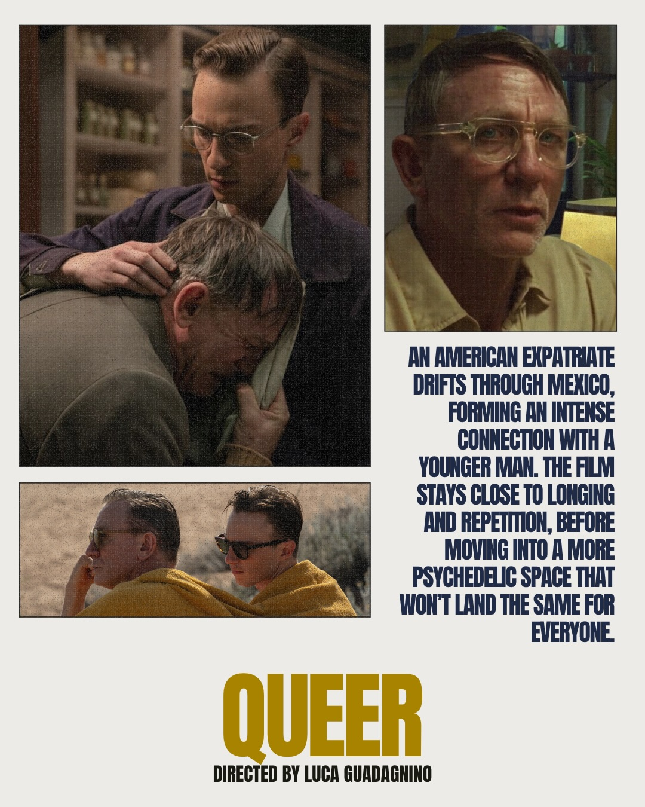
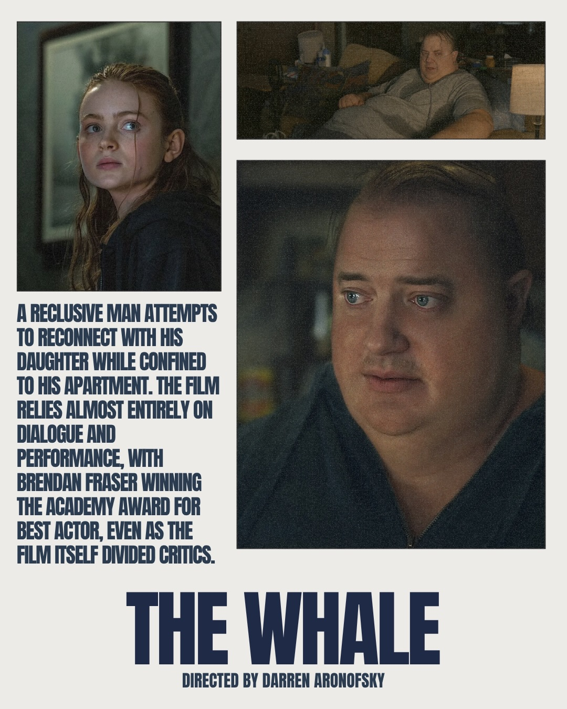
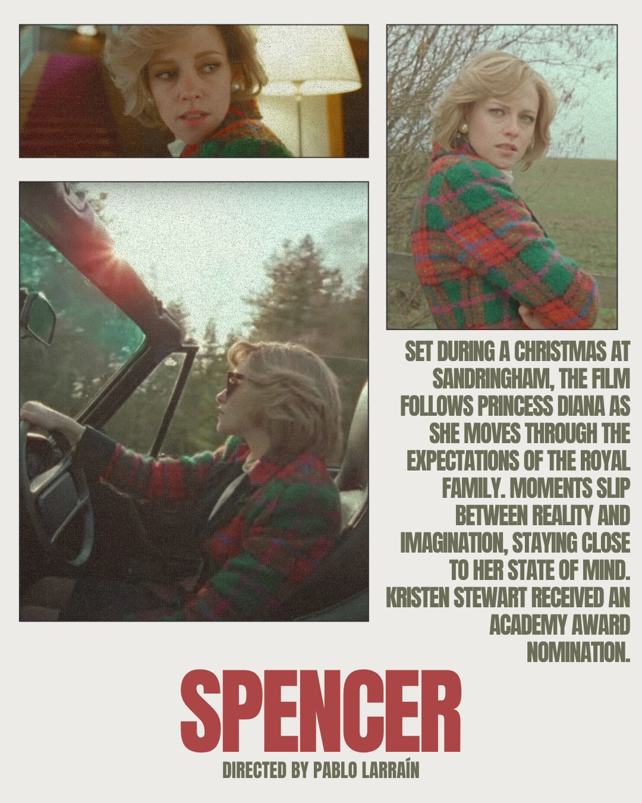
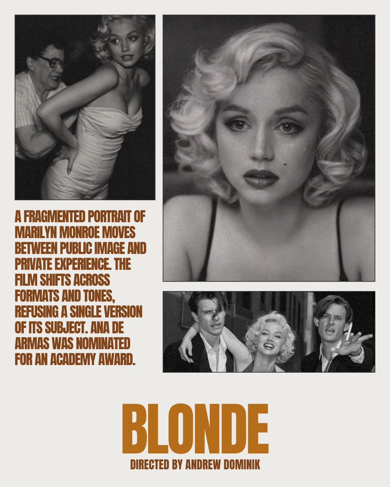

Instagram Post

POP MY BUB FILMS THAT DIVIDE EVERYONE
carousel (10 slides) (enriched by ClaudeClaw)
Summary
POP MY BUB FILMS THAT DIVIDE EVERYONE | POP MY BUB FILMS THAT DIVIDE EVERYONE | GUESTS ATTEND AN EXCLUSIVE DINING EXPERIENCE LED BY A CHE... | THREE STORIES REVOLVE AROUND CONTROL AND SUBMISSION, EACH... | JOURNALISTS MOVE ACROSS A FRACTURED UNITED STATES, DOCUME... | SET DURING A CHRISTMAS AT SANDRINGHAM, THE FILM FOLLOWS P...
1
POP MY BUB FILMS THAT DIVIDE EVERYONE
A woman in a white veil and orange puffer jacket holding white flowers stands next to a disheveled man with a bruised face and blood-stained shirt, both looking seriously at the viewer against a plain blue-grey background.
2
POP MY BUB FILMS THAT DIVIDE EVERYONE
A woman in a wedding veil and orange puffer jacket stands next to a bruised man in a dark coat and blood-stained shirt, both looking seriously at the viewer against a dark blue background.
3
A YOUNG WOMAN WORKING IN NIGHTLIFE MARRIES INTO EXTREME WEALTH, ONLY TO SEE THAT WORLD SLIP JUST AS FAST. THE FILM TAKES A TURN MIDWAY, REFRAMING EVERYTHING THAT CAME BEFORE. THAT PIVOT IS WHERE REACTIONS SPLIT, EVEN THOUGH IT WON BEST PICTURE. ANORA DIRECTED BY SEAN BAKER
A movie poster features three stills: a close-up of a young woman, the woman and a young man on an airplane ramp, and the two on a bed, with text describing the film and its title.
4
GUESTS ATTEND AN EXCLUSIVE DINING EXPERIENCE LED BY A CHEF WITH A PRECISE PLAN. AS EACH COURSE IS PRESENTED, THE INTENTION BECOMES HARDER TO IGNORE. THE SATIRE IS DIRECT, WHICH IS EXACTLY WHERE OPINIONS DIVIDE. THE MENU DIRECTED BY MARK MYLOD
The image is a movie poster featuring three stills: a close-up of a male chef, a wider shot of the chef overseeing kitchen staff, and a woman with red hair looking surprised in a dining setting.
5
THREE STORIES REVOLVE AROUND CONTROL AND SUBMISSION, EACH FOLLOWING CHARACTERS TIED TO RULES THEY RARELY QUESTION. JESSE PLEMONS WON BEST ACTOR AT CANNES, DRAWING ATTENTION TO THE PERFORMANCES. KINDS OF KINDNESS DIRECTED BY YORGOS LANTHIMOS
A movie poster features three panels: a woman in a brown suit standing next to a purple car and a wheelchair in a parking lot, the same woman dancing in the parking lot, and a close-up portrait of the woman, all alongside promotional text for the film "Kinds of Kindness."
6
JOURNALISTS MOVE ACROSS A FRACTURED UNITED STATES, DOCUMENTING AN INTERNAL CONFLICT AS THEY GO. THE FILM STAYS OBSERVATIONAL AND AVOIDS EXPLANATION, WHICH BECAME THE MAIN POINT OF DEBATE. CIVIL WAR DIRECTED BY ALEX GARLAND
A movie poster for "Civil War" displays three photographic panels featuring a woman with a camera, a man standing outdoors, and a man in camouflage with red sunglasses holding a rifle, alongside descriptive text.
7
AN AMERICAN EXPATRIATE DRIFTS THROUGH MEXICO, FORMING AN INTENSE CONNECTION WITH A YOUNGER MAN. THE FILM STAYS CLOSE TO LONGING AND REPETITION, BEFORE MOVING INTO A MORE PSYCHEDELIC SPACE THAT WON'T LAND THE SAME FOR EVERYONE. QUEER DIRECTED BY LUCA GUADAGNINO
A movie poster for "QUEER" by Luca Guadagnino displays three film stills featuring two men in different settings, accompanied by a synopsis of the film.
8
A RECLUSIVE MAN ATTEMPTS TO RECONNECT WITH HIS DAUGHTER WHILE CONFINED TO HIS APARTMENT. THE FILM RELIES ALMOST ENTIRELY ON DIALOGUE AND PERFORMANCE, WITH BRENDAN FRASER WINNING THE ACADEMY AWARD FOR BEST ACTOR, EVEN AS THE FILM ITSELF DIVIDED CRITICS. THE WHALE DIRECTED BY DARREN ARONOFSKY
A movie poster features three images: a young woman with red hair looking upwards, an overweight man lying on a couch, and a close-up of the man's face, alongside text promoting the film "The Whale."
9
SET DURING A CHRISTMAS AT SANDRINGHAM, THE FILM FOLLOWS PRINCESS DIANA AS SHE MOVES THROUGH THE EXPECTATIONS OF THE ROYAL FAMILY. MOMENTS SLIP BETWEEN REALITY AND IMAGINATION, STAYING CLOSE TO HER STATE OF MIND. KRISTEN STEWART RECEIVED AN ACADEMY AWARD NOMINATION. SPENCER DIRECTED BY PABLO LARRAÍN
A movie poster features three stills of Kristen Stewart as Princess Diana in a red and green plaid coat, with text describing the film and its title.
10
A FRAGMENTED PORTRAIT OF MARILYN MONROE MOVES BETWEEN PUBLIC IMAGE AND PRIVATE EXPERIENCE. THE FILM SHIFTS ACROSS FORMATS AND TONES, REFUSING A SINGLE VERSION OF ITS SUBJECT. ANA DE ARMAS WAS NOMINATED FOR AN ACADEMY AWARD. BLONDE DIRECTED BY ANDREW DOMINIK
The image displays a movie poster featuring three black and white photographs of a woman resembling Marilyn Monroe, with two men appearing in one of the photos, against a light background with descriptive text and the movie title.
All slides







